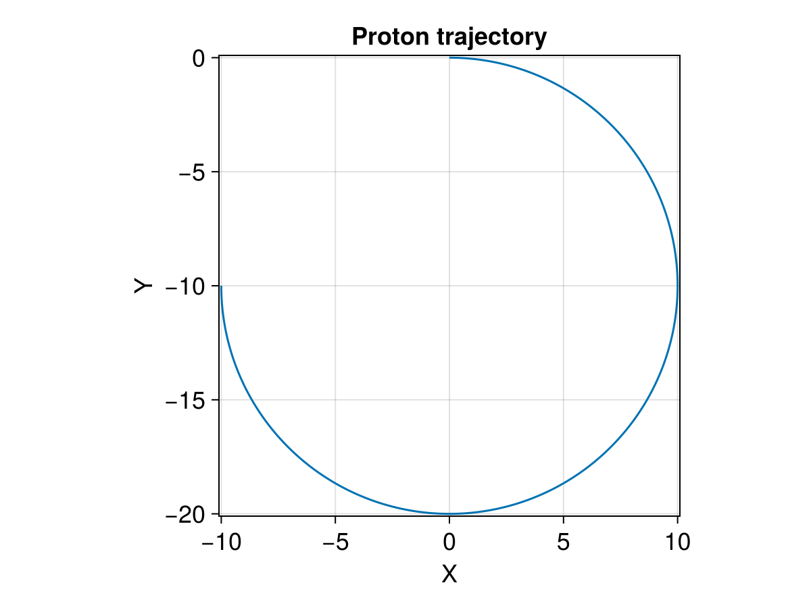

Tracing with Dimensionless Units and Periodic Boundary


This example shows how to trace charged particles in dimensionless units and EM fields with periodic boundaries in a 2D spatial domain. For details about dimensionless units, please check Demo: dimensionless tracing.
Now let's demonstrate this with trace_normalized!.
using TestParticle, OrdinaryDiffEqVerner, StaticArrays
using TestParticle: qᵢ, mᵢ
using CairoMakie
# Number of cells for the field along each dimension
nx, ny = 4, 6
# Unit conversion factors between SI and dimensionless units
B₀ = 10e-9 # [T]
Ω = abs(qᵢ) * B₀ / mᵢ # [1/s]
t₀ = 1 / Ω # [s]
U₀ = 1.0 # [m/s]
l₀ = U₀ * t₀ # [m]
E₀ = U₀*B₀ # [V/m]
x = range(-10, 10, length=nx) # [l₀]
y = range(-10, 10, length=ny) # [l₀]
B = fill(0.0, 3, nx, ny) # [B₀]
B[3,:,:] .= 1.0
E(x) = SA[0.0, 0.0, 0.0] # [E₀]
# If bc == 1, we set a NaN value outside the domain (default);
# If bc == 2, we set periodic boundary conditions.
param = prepare(x, y, E, B; species=User, bc=2);Note that we set a radius of 10, so the trajectory extent from -20 to 0 in y, which is beyond the original y range.
# Initial conditions
stateinit = let
x0 = [0.0, 0.0, 0.0] # initial position [l₀]
u0 = [10.0, 0.0, 0.0] # initial velocity [v₀]
[x0..., u0...]
end
# Time span
tspan = (0.0, 1.5π) # 3/4 gyroperiod
prob = ODEProblem(trace_normalized!, stateinit, tspan, param)
sol = solve(prob, Vern9());Visualization
f = Figure(fontsize = 18)
ax = Axis(f[1, 1],
title = "Proton trajectory",
xlabel = "X",
ylabel = "Y",
limits = (-10.1, 10.1, -20.1, 0.1),
aspect = DataAspect()
)
lines!(ax, sol, idxs=(1,2))

This page was generated using DemoCards.jl and Literate.jl.